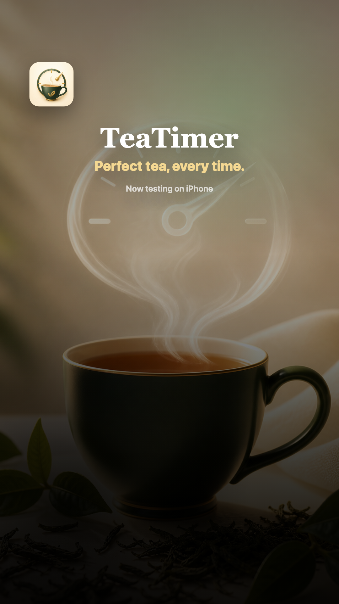
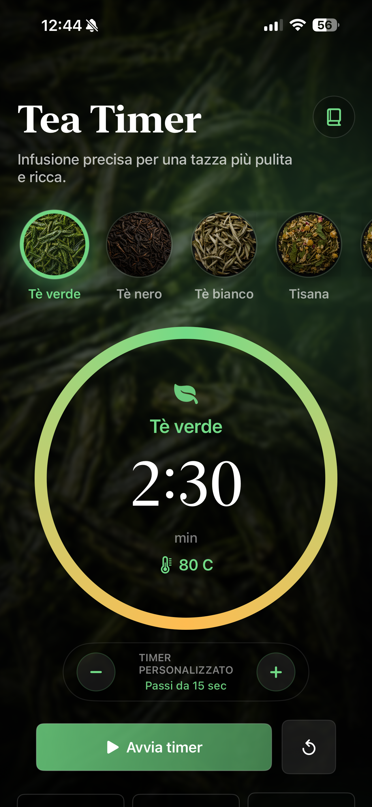
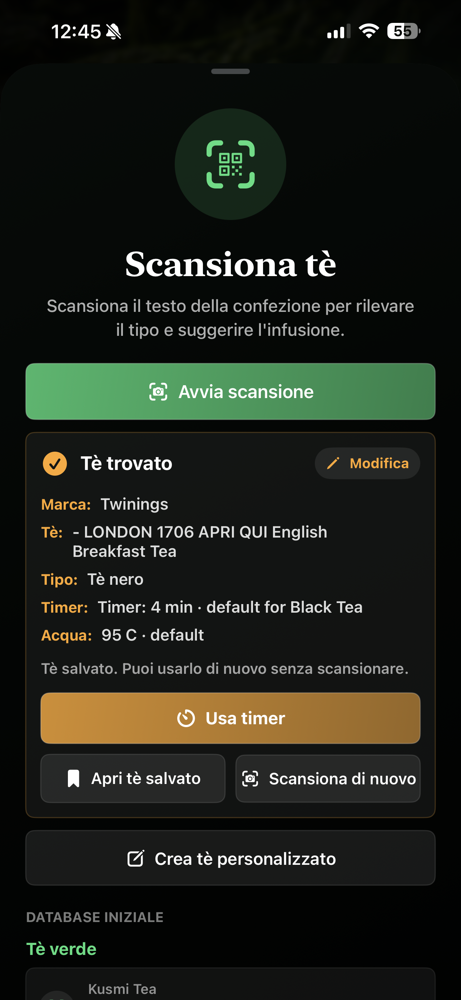
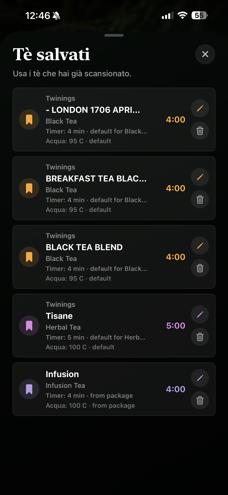
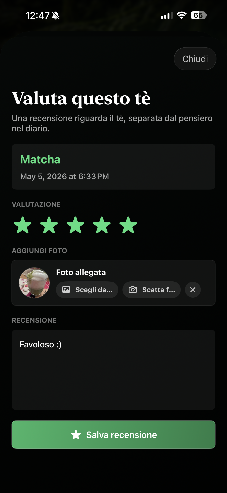

Perfect tea,
every time.
Scan your tea label, save your favorites, and brew every cup with the calm confidence of a quiet ritual.
A calmer way to brew
Four screens. One ritual.
Scan, save, time, and review your tea with a single, unhurried iPhone experience.

Timer

Scan

Library

Review
The craft
Everything your
tea remembers.
Simple tools for scanning, saving, timing, and coming back to the cups you love.
Smart scanner
Detect tea type and brew time from the package.
Saved teas
Save your favorite teas and reuse them anytime.
Precise timer
The right time and temperature for every tea.
Notifications
Get notified the moment your tea is ready.
Dynamic Island
Follow your timer right from your iPhone.
Tea moments
Track your mood, notes, photos, and reviews.
Multi-language
English, Italian, French, and Spanish.
More to steep.
New rituals brewing every season.
The ritual
Scan once.
Brew beautifully.
- 01
Scan your tea label
Let TeaTimer read the essentials from the package.
- 02
Save it once
Keep the tea, timing, temperature, and notes together.
- 03
Brew perfectly every time
Start the right timer whenever the kettle is ready.
Be first to steep.
Join the waitlist for early access on iPhone.
No spam. Just the kettle whistle.